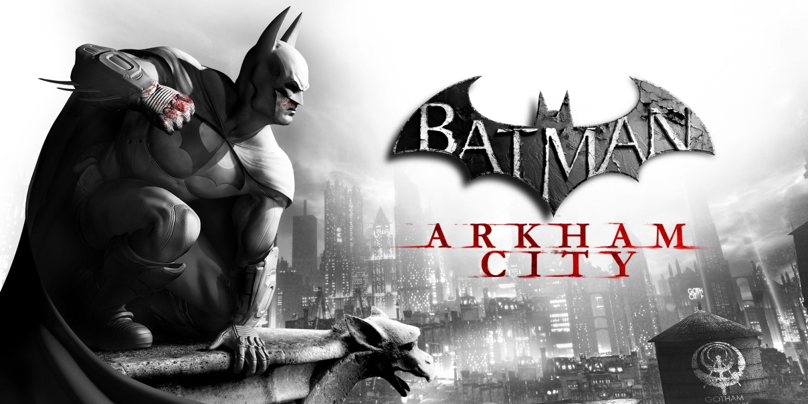
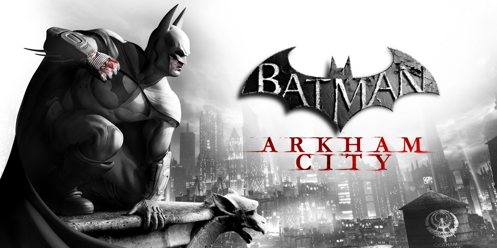

About me
I am currently a second year student at Access Creative College. I am studying level 3 games design, where I am learning the many different roles in creating a video game. After finishing college I plan to go to University to further hone my skills in game design and potentially make some connections with people in the industry. Within my college, I have participated in multiple Game Jams and have even had the privilege of being a team leader in two of them. my most recent game jam was in December 2025, where I had to work with first year students who were studying either game design or games art.
I am an avid gamer and fan of all types and genres of video games. The main thing I adore about video games is how unique from other forms of entertainment they are due to their interactivity, which makes players much more immersed in their worlds. I first fell in love with the notion of creating video games when I played Super Mario Maker in 2015. The concept of creating my own levels encapsulated my imagination, and that feeling has stuck with me ever since. I particularly enjoy indie games due to the amount of creativity and unique ideas they contain. My dream is to one day work on a video game that moves people emotionally the same way as several of the games I have played over the years have moved me.
Below are a few of my favourite games:


 
